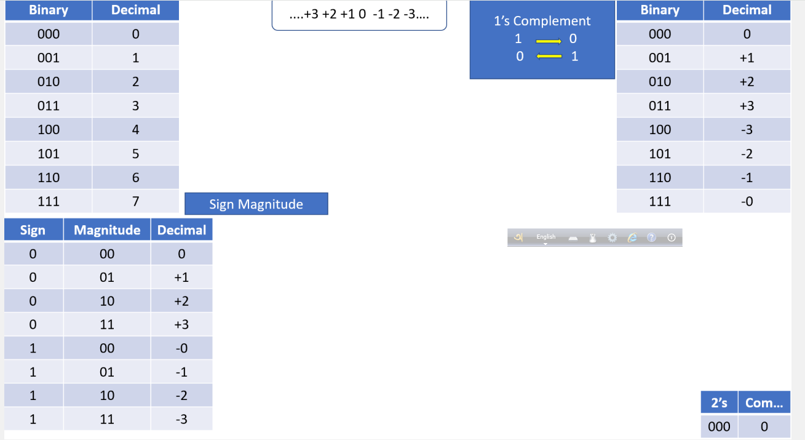
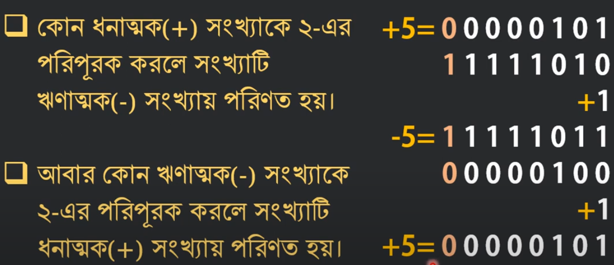
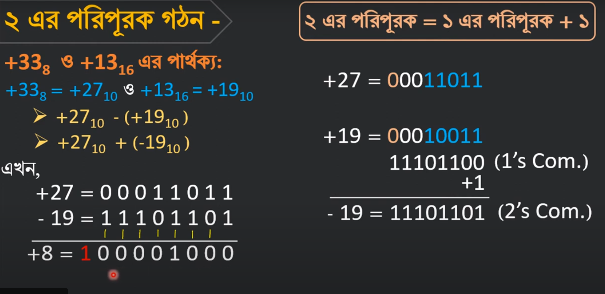
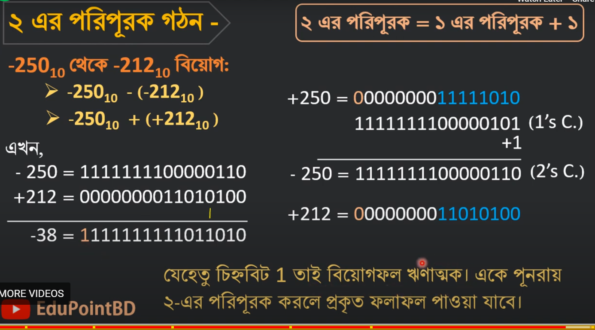
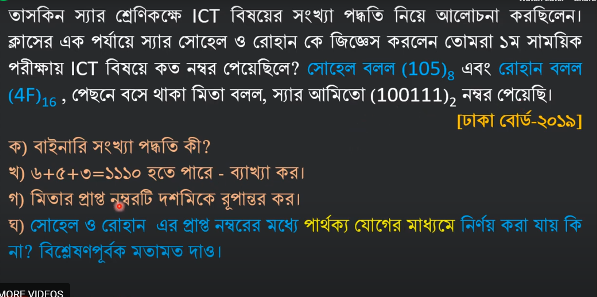
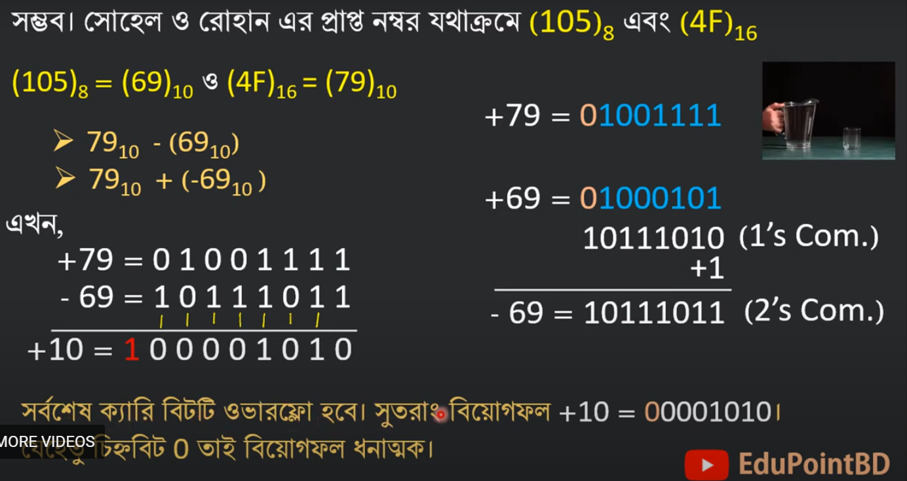
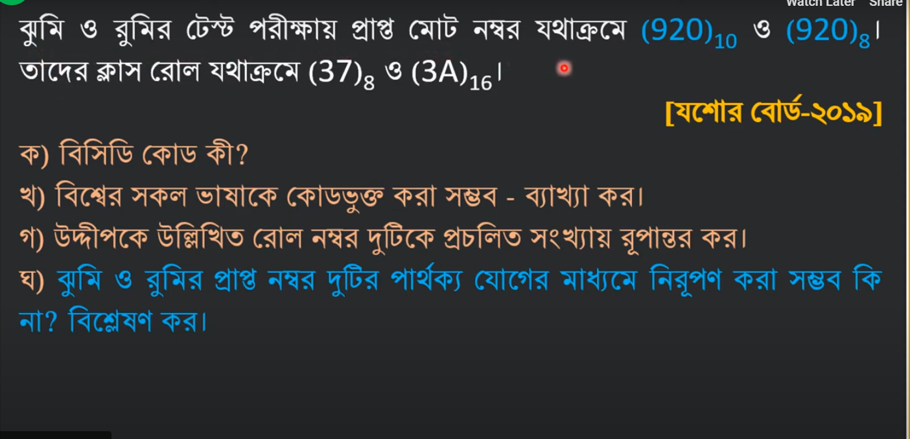
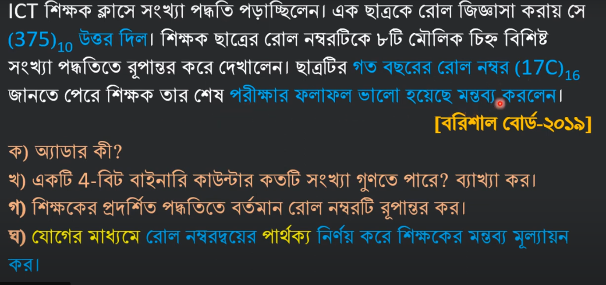
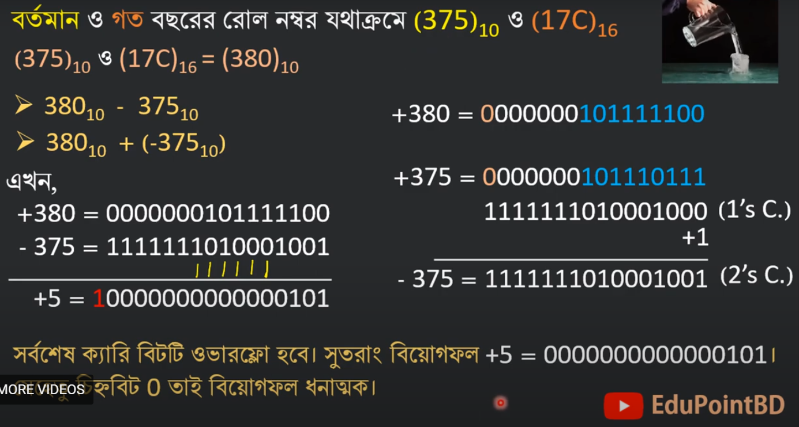

Complement
1's & 2's Complement
Bit = 0/1
Sign & Sign Number = + (sign) & +5 (sign Number)
Sign bit Sign = bit হলো একটি নির্দিষ্ট বিট যা কম্পিউটারে কোনো সংখ্যার
ধনাত্মক (Positive) বা ঋণাত্মক (Negative) অবস্থা নির্ধারণ করে।
0: ধনাত্মক সংখ্যা।
1: ঋণাত্মক সংখ্যা।
Register (রেজিস্টার) = Register হলো কম্পিউটারের প্রসেসরের (CPU) ভেতরে অবস্থিত একটি অতি দ্রুতগতি সম্পন্ন স্টোরেজ ইউনিট।
Carry Bit = Carry Bit হলো কম্পিউটারে গণনার সময় যখন দুটি সংখ্যা যোগ করে অতিরিক্ত একটি বিট (Carry) উৎপন্ন হয়, তখন তা Carry Flag বা Carry Bit-এ সংরক্ষিত হয়









Edu Point